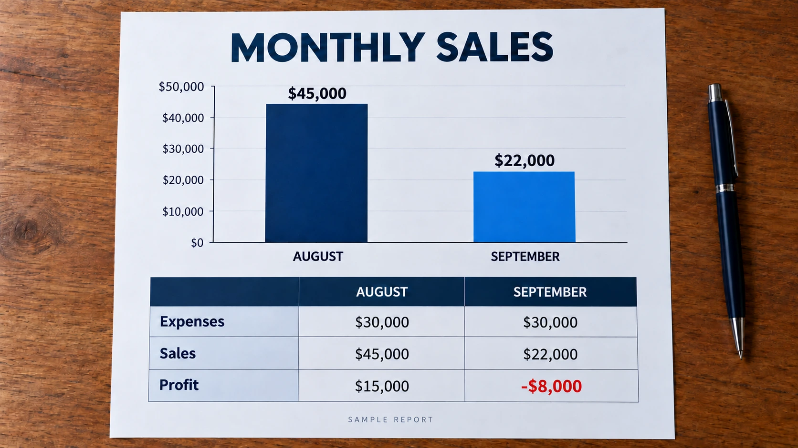

The AOL Greeting That Made the Internet Feel Personal
How a $200 living room recording and a screeching dial-up modem turned AOL into the front door of the internet for a generation of Americans.
Read moreHow a $200 living room recording and a screeching dial-up modem turned AOL into the front door of the internet for a generation of Americans.
Read more
How leather stitching, wooden shelves and yellow legal pads gave way to flat color in 2013, and why designers still argue about what was lost.
Read more
Long before feeds and followers, readers argued, joked and built reputations under articles. A look at the rise, fall and quiet return of comments.
Read more
A verified Google Business Profile may still be hard to find. Understand why verification and local search placement are different.
Read more
How Flash brought animation, games and video to a static web, then lost to mobile and HTML5 and ended in 2020, after shaping a generation online.
Read more
CAPTCHA began as a way to stop spam bots, then reCAPTCHA used human answers to digitize books and label images, raising a lasting debate.
Read more
For decades the Yellow Pages decided which local businesses got seen. Its print end in 2019 closed an era of shared, paid, annual visibility.
Read moreHow familiar local listings, a simple interface, and a restrained business model helped Craigslist endure decades of changes on the web.
Read moreFrom Japanese factories to restaurant tables, how QR codes became familiar and why a useful destination still matters after the scan.
Read more
Why writers returned to the inbox, how subscription publishing grew, and what a portable subscriber list means for the relationship with readers.
Read more
How TikTok became a search tool for recommendations and demonstrations, what Adobe?s survey shows, and why Google still matters.
Read more
Trace Google?s third-party cookie phase-out promise, repeated delays, policy reversals, and the unresolved debate over privacy and advertising.
Read more
Why Wikipedia reported declining human pageviews while its knowledge feeds AI tools, and what this means for readers and volunteer participation.
Read more
Google Search now blends website links with AI responses. What that change means for customers, publishers and business visibility.
Read more
Fake reviews make it harder to trust online ratings. Why genuine customer experiences matter, and what the evidence actually shows.
Read more
Why business websites often feel alike, how shared patterns influence design, and why a company’s own identity still matters.
Read more
Understand a sudden Google rankings drop, how it differs from losing website visitors, and which reports can explain what changed.
Read more
What to look for in SEO reports, account access, completed work, and progress toward calls and customers, without relying on vague promises.
Read more
Decide whether your business website needs a redesign, SEO improvements, or a combination, based on usability, search performance, and customer experience.
Read moreCompare the pros and cons of starting a business alone or with a partner, including control, workload, money, and shared decisions.
Read more
Paid marketing, referrals, and legal client solicitation are different arrangements. Here is what California and Oregon law firms need to review before buying leads.
Read more